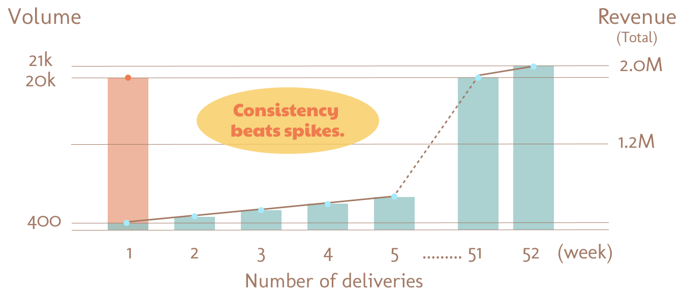
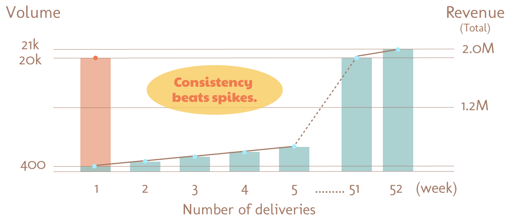

Marketing
Marketing with intention, without losing feasibility.I focus on strategies that can actually be executed — balancing ambition with reality, and ideas with impact.
In-house Social Media Advertising Optimization - VTech
Proposed and led the transition from agency-managed to in-house social media advertising to improve efficiency and cost control. Developed granular audience segmentation and executed continuous A/B testing, resulting in measurable performance improvements and budget optimization.
CRM & Newsletter Strategy — Crystal Lodge
Contributed over $2M in revenue through CRM-driven newsletter campaigns.Analyzed customer data and segmented audiences based on travel history and seasonal stay patterns, delivering tailored messaging aligned with past guest behavior.
 

Creative & Landing Page A/B Testing — ADK (Hilton)
Researched the relationship between ad creative and landing page consistency. Demonstrated that higher creative-message alignment reduced bounce rates, and presented findings as actionable recommendations to the client.
Influencer Marketing Strategy Presentation — adidas
My approach to marketing was shaped early on. At 19, during my time at adidas, I researched influencer marketing not as promotion, but as an extension of personal expression.That experience taught me a principle I still follow today:marketing works best when it respects the creator, not when it controls them.
Across all strategies, my priority remains the same:
understanding people, respecting constraints, and choosing what actually works.
Marketing succeeds when ideas meet reality
— not when they ignore it.